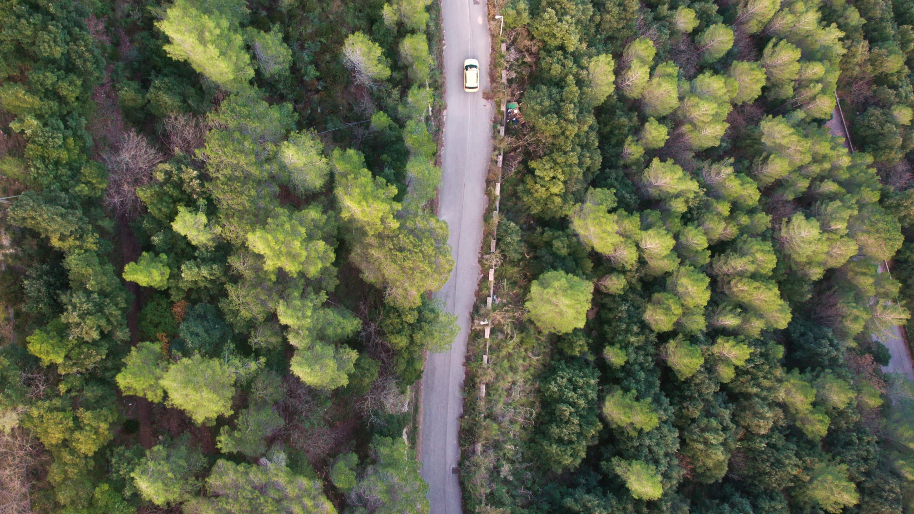
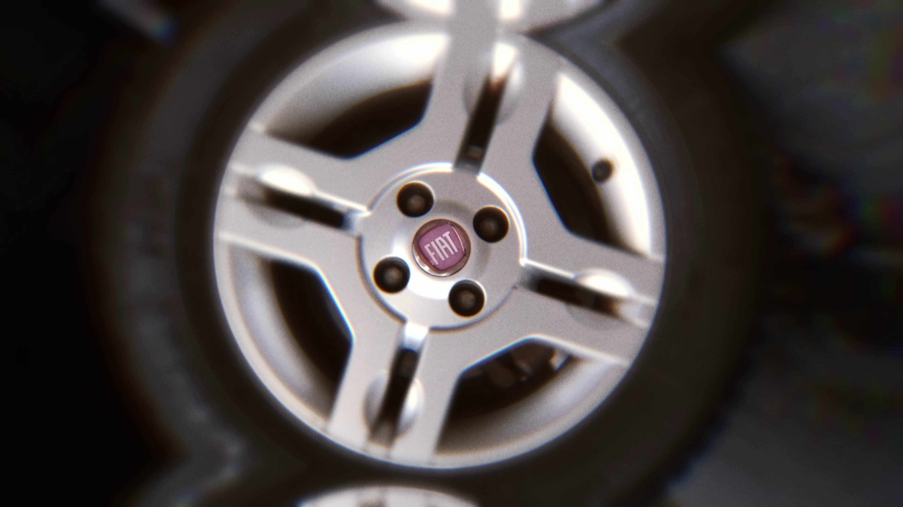
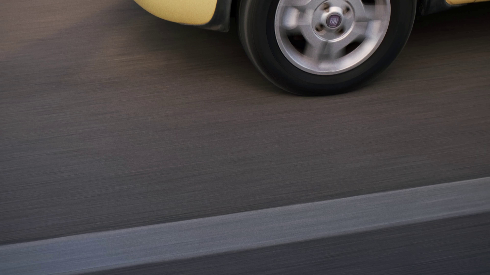
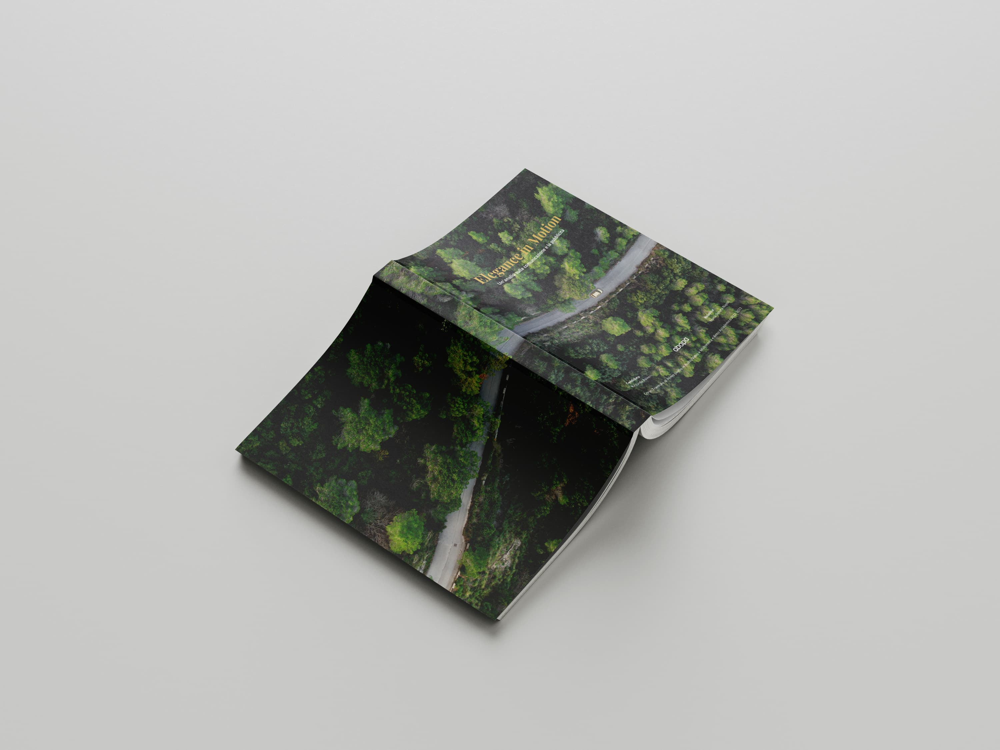
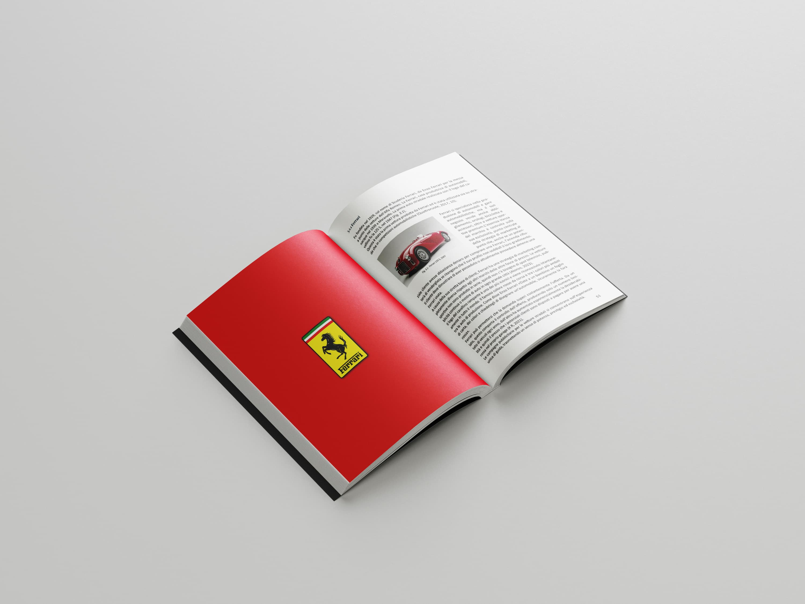

Still Frame






Come tesi di diploma accademico ho scelto di esaminare l’evoluzione della comunicazione, partendo dalle origini dei mass media fino ad approdare alla comunicazione moderna attraverso l’utilizzo di internet.
Ho approfondito le origini della pubblicità e in particolar modo quella relativa al mondo automobilistico, data la mia affezione alle quattro ruote. Durante la ricerca, mi sono concentrato su tre brand di rilievo che si collocano in fasce di mercato differenti: Ferrari, rappresentante del lusso, BMW per la fascia medio-alta, e FIAT per la fascia più bassa.
I confronti riguardano l’analisi di video commercial realizzati in periodo distanti fra di loro, di vetture tanto importanti quanto iconiche. Tuttavia, la mia attenzione non si è limitata alle caratteristiche delle vetture stesse, ma si è estesa al modo in cui vengono pubblicizzate, analizzando il “come” e l’efficacia dei messaggi veicolati attraverso la pubblicità.
Ho quindi realizzato un video pubblicitario che mettesse insieme le informazioni ricavate dalle analisi, elevando la FIAT Panda, un’auto appartenente alla fascia più bassa del mercato, a veicolo di lusso. Ho inoltre realizzato un logo ad-hoc per dare un peso maggiore alla percezione del brand e il suo posizionamento sul mercato.




